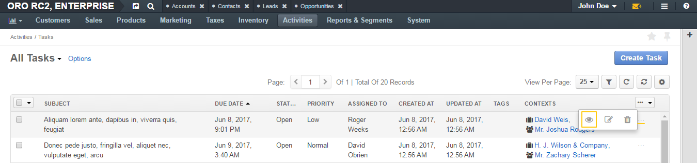
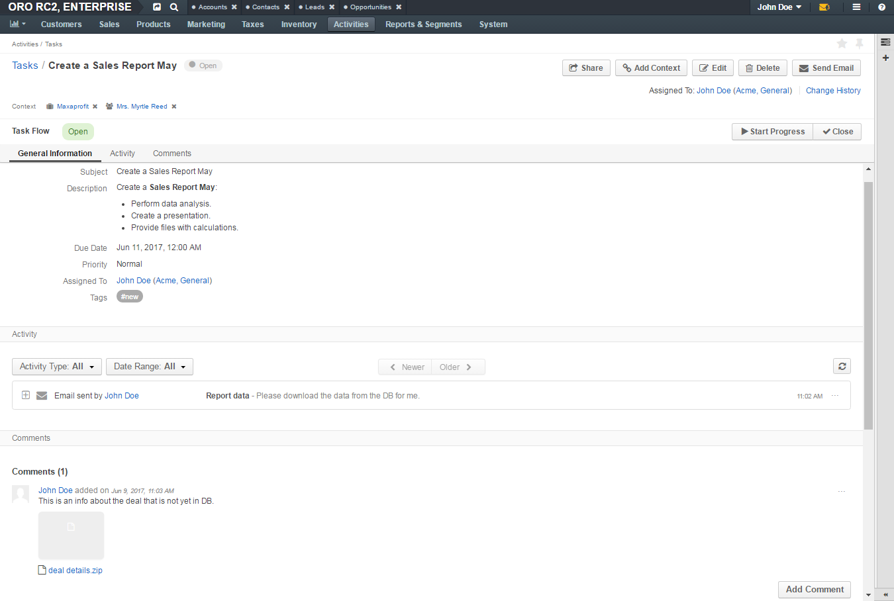
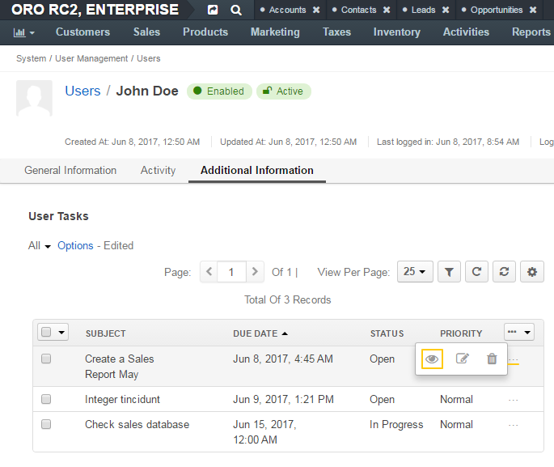
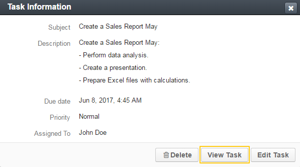
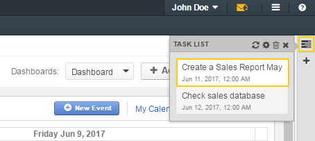

To review a task from the task list:
In the main menu, navigate to Activities>Tasks.
On the task list, click the required task.
Alternatively, you can click the More Options menu at the end of the corresponding row and then click the View icon.
Review the task details. For the description of the fields, see step 3 of the Create a task from the Tasks Grid action description.
When user is assigned a task, it appears in the Tasks subsection of the Additional Information section in the user profile.
To edit a task from the assignee’s profile page:
Open the task assignee’s profile.
Click Additional Information and navigate to the Tasks subsection.
In the task list, click the More Options menu at the end of the row with the task you would like to edit and then click the View icon.
Review the task details. For the description of the fields, see Detailed Task Information.
You can view a task from the My Calendar page and the Today’s Calendar widget.
Click on the task cell to view the Task Information card. On the task card, click View to open a task view page.
For the description of the fields, see Detailed Task Information.
You can view a task from the My Tasks sidebar widget.
Click the task on the list to open the task view page.
